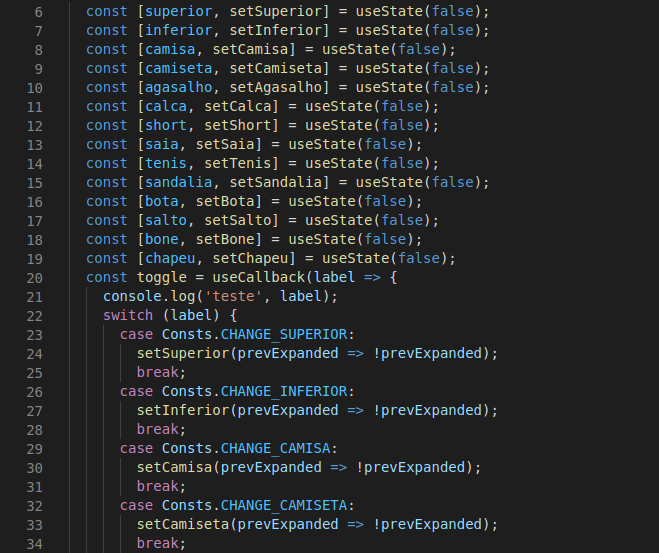
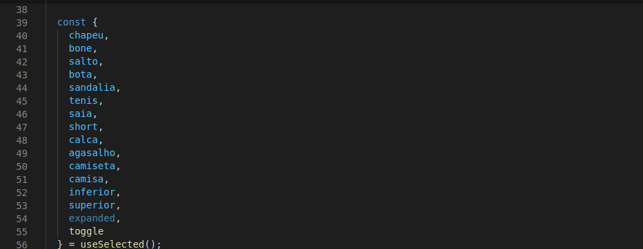

Memento
| Data | Versão | Descrição | Autor |
|---|---|---|---|
| 29/03/2021 | 1.0 | Criação do documento | Victor Levi |
| 09/04/2021 | 1.1 | Adição da introdução e aplicação no projeto | Victor Levi |
Introdução
O memento é um padrão de projeto comportamental que permite uma melhor manutenção nos dados da aplicação, podendo armazenar-los para uma utilização mais rápida e, no caso do React.js, permite menos quantidade de atualizações da página, tornando a visuallização mais flúida
Aplicação no projeto
O padrão de projeto Memento foi utilizado para armazenar o estado das checboxes da loja, sendo eles os filtros que filtrarão as roupas, ele depende de um componente que ordena ou não a gravação do estado de determinadas varráveis

